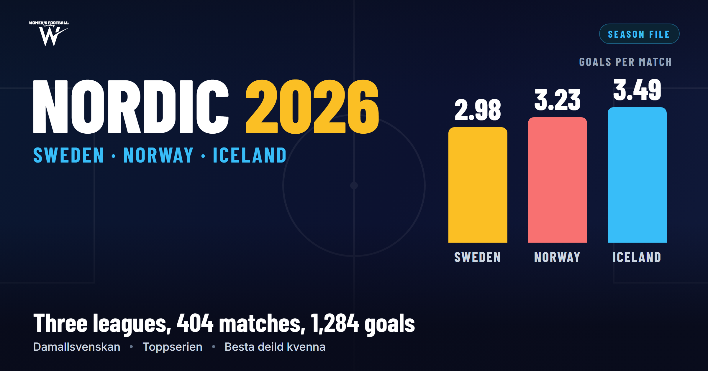

The Nordic Seasons Are Over: Sweden, Norway, Iceland and Finland 2026 in Numbers
Four leagues, 490 matches, 1,591 goals. The Nordic season is over. Tables, scorers, the players who never missed a minute and the youngest who earned regular minutes: we put it all side by side.

Europe's big leagues have not even reached the halfway point, but up north the curtain has already come down. Sweden's Damallsvenskan played its last match on 15 November, Norway's Toppserien on 7 November. In Iceland, the 18-round double round robin of the Besta deild kvenna was completed on 7 September, and in Finland the Kansallinen Liiga championship series ended on 24 October.
We measured all four leagues with the same ruler. Where did the goals flow, where did playing at home count, and which league gave its young players the most minutes? First a tour of each league, then all four side by side, and finally a look at the winter window that opens in January.
Sweden: Damallsvenskan
14 teams, 182 matches, 543 goals. Two clubs at the top, then a 17-point gap.
BK Häcken lost only 1 of their 26 matches, won 23 and finished first on 71 points. Hammarby were right behind on 65. And third? Malmö FF ended on 48; the top two might as well have been playing in a league of their own. At the other end, IK Uppsala Fotboll won 1 of 26 matches and conceded 101 goals.
Sweden had the fewest goals of the four leagues, 2.98 per match. But this is where playing at home mattered most: the home side won 47.3% of matches.
Damallsvenskan 2026: results and table
How the matches ended
| # | TEAM | P | W | D | L | F:A | GD | PTS |
|---|---|---|---|---|---|---|---|---|
| 1 | BK Häcken | 26 | 23 | 2 | 1 | 82:16 | +66 | 71 |
| 2 | Hammarby | 26 | 21 | 2 | 3 | 64:13 | +51 | 65 |
| 3 | Malmö FF | 26 | 13 | 9 | 4 | 48:20 | +28 | 48 |
| ··· places 4–12 ··· | ||||||||
| 13 | Växjö DFF | 26 | 6 | 4 | 16 | 29:48 | −19 | 22 |
| 14 | IK Uppsala Fotboll | 26 | 1 | 3 | 22 | 16:101 | −85 | 6 |
Source: SoccerDonna match reports; table computed from match results. The full table and all player lists: Damallsvenskan league page.
The name at the top of the scoring list is Maja Bodin, with 16 goals, and they came in two different shirts: her first 5 for Växjö DFF, the next 11 for BK Häcken. Second on 15 is Tabby Tindell, also of BK Häcken, so the league's two leading scorers now share a dressing room. Älvali Lindström, fourth on the list, also changed clubs during the season (IK Uppsala Fotboll → Malmö FF).
Then there are the players who never came off: 4 were on the pitch for every minute of all 26 matches, 2 of them goalkeepers. As for the young ones: among players with at least 900 minutes, the youngest are three 17-year-olds, Ellie Junetoft (AIK Solna), Fanny Peterson (Hammarby) and Filippa Andersson Widén (Kristianstads DFF).
Damallsvenskan 2026: players
GOALS
- 1Maja BodinVäxjö DFF → BK Häcken · 25 matches16
- 2Tabby TindellBK Häcken · 25 matches15
- 3Frida ThörnqvistIF Brommapojkarna · 26 matches11
- 4Älvali LindströmIK Uppsala Fotboll → Malmö FF · 21 matches10
- 4Emma EngströmIFK Norrköping DFK · 25 matches10
ASSISTS
- 1Anna AnvegårdBK Häcken7
- 1Thelma Karen PálmadóttirBK Häcken7
- 3Nathalie Hoff PerssonMalmö FF6
- 3Tabby TindellBK Häcken6
- 5Milla LarssonVittsjö GIK5
- 5Stina LennartssonHammarby5
- 5Nova SelinAIK Solna5
ON THE PITCH EVERY MINUTE · 26 matches, 2,340 minutes
- ·Tilda PerssonKristianstads DFF · Defender
- ·Elin VaughanVittsjö GIK · Goalkeeper
- ·Amanda WulffIF Brommapojkarna · Defender
- ·Sofia HjernIFK Norrköping DFK · Goalkeeper
AT LEAST 900 MINUTES: THE YOUNGEST
- ·Ellie JunetoftAIK Solna · aged 171,451min
- ·Fanny PetersonHammarby · aged 171,350min
- ·Filippa Andersson WidénKristianstads DFF · aged 171,201min
Source: SoccerDonna match reports. The reports record an assist for 53% of goals.
Norway: Toppserien
12 teams, 132 matches, 427 goals. One player scored 28 in 21 matches.
SK Brann conceded just 8 goals in 22 matches, fewer than one every two games. The result: first place on 57 points. Aalesunds FK followed on 50 and Rosenborg BK Trondheim on 48. At the bottom, Lillestrøm SK Kvinner ended on 16 points and FK Bodø/Glimt on 6.
Playing at home made little difference in Norway: 56 home wins against 54 away wins. The league averaged 3.23 goals per match.
Toppserien 2026: results and table
How the matches ended
| # | TEAM | P | W | D | L | F:A | GD | PTS |
|---|---|---|---|---|---|---|---|---|
| 1 | SK Brann | 22 | 18 | 3 | 1 | 62:8 | +54 | 57 |
| 2 | Aalesunds FK | 22 | 16 | 2 | 4 | 48:21 | +27 | 50 |
| 3 | Rosenborg BK Trondheim | 22 | 14 | 6 | 2 | 44:21 | +23 | 48 |
| ··· places 4–10 ··· | ||||||||
| 11 | Lillestrøm SK Kvinner | 22 | 4 | 4 | 14 | 26:46 | −20 | 16 |
| 12 | FK Bodø/Glimt | 22 | 1 | 3 | 18 | 14:79 | −65 | 6 |
Source: SoccerDonna match reports; table computed from match results. The full table and all player lists: Toppserien league page.
The season's most striking individual number is here too. Katarina Dybvik Sunde scored 28 goals in 21 matches. Aalesunds FK scored 48 all season, so more than half of her team's goals carry her name. The nearest challenger, Brenna Lovera, finished 10 behind.
Two players share the top of the assist list on 9 each: Laura Gashi and Karna Sødahl, who is only 17. A total of 6 players played every minute of all 22 matches. And look at this: 4 players aged 16 got at least 900 minutes. The one who played most was Marie Sæterøy: 1,745 minutes for Aalesunds FK.
Toppserien 2026: players
GOALS
- 1Katarina Dybvik SundeAalesunds FK · 21 matches28
- 2Brenna LoveraSK Brann · 22 matches18
- 3Ronja ArnesenLillestrøm SK Kvinner → Vålerenga Fotball · 21 matches12
- 4Joshualyn ReevesLyn Oslo → Rosenborg BK Trondheim · 21 matches11
- 4Cille NilsenRosenborg BK Trondheim · 22 matches11
ASSISTS
- 1Laura GashiAalesunds FK9
- 1Karna SødahlRosenborg BK Trondheim9
- 3Ine BerreRosenborg BK Trondheim7
- 3Stine BrekkenVålerenga Fotball7
- 3Mathea Berg-SolemdalStabæk FK7
ON THE PITCH EVERY MINUTE · 22 matches, 1,980 minutes
- ·Mette MuriAalesunds FK · Defender
- ·Emilie BølvikenStabæk FK · Defender
- ·Frida AurslandFK Haugesund · Goalkeeper
- ·Helmi VapolaMolde FK · Defender
- ·Kenna CaldwellMolde FK · Goalkeeper
- ·Una LangkåsRøa IL · Goalkeeper
AT LEAST 900 MINUTES: THE YOUNGEST
- ·Marie SæterøyAalesunds FK · aged 161,745min
- ·Mari Alnes BersåsMolde FK · aged 161,410min
- ·Martine WæhlerRøa IL · aged 161,197min
- ·Sofia Mendelin-NorebøLillestrøm SK Kvinner · aged 161,004min
Source: SoccerDonna match reports. The reports record an assist for 73% of goals.
Iceland: Besta deild kvenna
10 teams, 90 matches, 314 goals. Two teams level on 37 points at the top.
The table below is how things stood after round 18, and at the top it could hardly be closer: Breidablik and FH Hafnarfjördur both have 37 points, and their goal differences are almost identical (+25 and +24). They got there in different ways. FH Hafnarfjördur scored 56, the most in the league; Breidablik were tighter at the back, conceding 21 to 32.
The middle is crowded too: only 8 points separate third from last. Lower down, Valur Reykjavik and Víkingur Reykjavik are level on 20, and Þór/KA Akureyri are last on 19.
Besta deild kvenna 2026: results and table
How the matches ended
| # | TEAM | P | W | D | L | F:A | GD | PTS |
|---|---|---|---|---|---|---|---|---|
| 1 | Breidablik= | 18 | 12 | 1 | 5 | 46:21 | +25 | 37 |
| 2 | FH Hafnarfjördur= | 18 | 11 | 4 | 3 | 56:32 | +24 | 37 |
| 3 | Iþrottabandalag Vestmannaeyja | 18 | 8 | 3 | 7 | 31:34 | −3 | 27 |
| ··· places 4–7 ··· | ||||||||
| 8 | Valur Reykjavik= | 18 | 5 | 5 | 8 | 22:31 | −9 | 20 |
| 9 | Víkingur Reykjavik= | 18 | 6 | 2 | 10 | 27:38 | −11 | 20 |
| 10 | Þór/KA Akureyri | 18 | 5 | 4 | 9 | 24:28 | −4 | 19 |
Source: SoccerDonna match reports; table computed from match results. The = sign marks teams level on points, ordered by goal difference. The full table and all player lists: Besta deild kvenna league page.
Only Finland scored more freely than Iceland, which averaged 3.49 goals per match. Ída Marín Hermannsdóttir leads the scoring list with 13 in 15 matches, and three players follow on 11: Allison Lowrey, Hrafnhildur Ása Halldórsdóttir and Taylor Hamlett.
One of those three appears on both lists: Hrafnhildur Ása Halldórsdóttir, aged 19, scored 11 and added 8 assists. The assist list is led by someone even younger: Ingibjörg Magnúsdóttir, aged 17, with 9. A total of 10 players played all 90 minutes of all 18 matches. Among players whose age is known, the youngest with at least 900 minutes is Anna Heiða Óskarsdóttir (FH Hafnarfjördur), aged 16.
Besta deild kvenna 2026: players
GOALS
- 1Ída Marín HermannsdóttirFH Hafnarfjördur · 15 matches13
- 2Allison LowreyIþrottabandalag Vestmannaeyja · 16 matches11
- 2Hrafnhildur Ása HalldórsdóttirBreidablik · 18 matches11
- 2Taylor HamlettFram Reykjavík · 18 matches11
- 5Alda ÓlafsdóttirFram Reykjavík · 18 matches10
ASSISTS
- 1Ingibjörg MagnúsdóttirFH Hafnarfjördur9
- 2Agla María AlbertsdóttirBreidablik8
- 2Hrafnhildur Ása HalldórsdóttirBreidablik8
- 4Andrea Rán HauksdóttirFH Hafnarfjördur7
- 5Helena ErringtonFH Hafnarfjördur6
- 5Jasmín Erla IngadóttirVíkingur Reykjavik6
ON THE PITCH EVERY MINUTE · 18 matches, 1,620 minutes
- ·Deja SandovalFH Hafnarfjördur · Defender
- ·Kristín Klara ÓskarsdóttirIþrottabandalag Vestmannaeyja · Midfielder
- ·Bridgette SkibaUMF Stjarnan · Goalkeeper
- ·Mollee SwiftKnattspyrnufélagið Þróttur · Goalkeeper
- ·Ashley OrkusFram Reykjavík · Goalkeeper
- ·Isabelle GilmoreFram Reykjavík · Defender
- ·Taylor HamlettFram Reykjavík · Forward
- ·Áslaug Dóra SigurbjörnsdóttirVíkingur Reykjavik · Defender
- ·Allie AugurÞór/KA Akureyri · Goalkeeper
- ·Margrét ÁrnadóttirÞór/KA Akureyri · Midfielder
AT LEAST 900 MINUTES: THE YOUNGEST
- ·Anna Heiða ÓskarsdóttirFH Hafnarfjördur · aged 161,327min
Source: SoccerDonna match reports. The reports record an assist for 69% of goals.
Finland: Kansallinen Liiga
8 teams, 86 matches, 307 goals. The highest-scoring of the four: 3.57 per match.
Finland plays its season in two acts. The 8 teams first played a double round robin between 28 March and 25 July. The top 6 then kept their points and met twice more, with the final whistle on 24 October. The bottom two of the regular season, PK-35 Vantaa and VIFK, played a separate series with four clubs from the second-tier Kansallinen Ykkönen.
HJK led in both acts: first in the regular season on 39 points, and still first after 24 matches, with 18 wins and 56 points. Åland United followed on 49 and HPS on 47. IF Gnistan, in sixth, ended on 16.
Here is a curious detail: Finland is the only one of the four leagues where away teams won more often than home teams, 41 away wins against 36 home wins. The official site also records every crowd: the average was 431.
Kansallinen Liiga 2026: results and table
How the matches ended
| # | TEAM | P | W | D | L | F:A | GD | PTS |
|---|---|---|---|---|---|---|---|---|
| 1 | HJK | 24 | 18 | 2 | 4 | 65:27 | +38 | 56 |
| 2 | Åland United | 24 | 16 | 1 | 7 | 60:30 | +30 | 49 |
| 3 | HPS | 24 | 14 | 5 | 5 | 42:25 | +17 | 47 |
| 4 | KuPS | 24 | 14 | 3 | 7 | 48:30 | +18 | 45 |
| 5 | Ilves | 24 | 8 | 3 | 13 | 42:52 | −10 | 27 |
| 6 | IF Gnistan | 24 | 5 | 1 | 18 | 29:65 | −36 | 16 |
| ··· bottom two of the regular season (14 matches) ··· | ||||||||
| 7 | PK-35 Vantaa | 14 | 2 | 1 | 11 | 13:36 | −23 | 7 |
| 8 | VIFK | 14 | 0 | 2 | 12 | 8:42 | −34 | 2 |
Source: Kansallinen Liiga official site. The top 6 rows are totals after 24 matches; the bottom two are from the regular season.
The top of the scoring list is shared: Monica Hagström (Åland United) and Gentjana Rochi (KuPS) both scored 15, Gentjana Rochi in 21 matches and Monica Hagström in 24. Third-placed Abby Renate Kraemer carried a big share: her 14 goals are close to half of the 29 scored by IF Gnistan, who finished sixth.
Miho Kamogawa leads the assist list with 11, ahead of Minttu Takanen on 10. Monica Hagström is on both lists: 15 goals and 6 assists. And the regular season's bottom two? In the series with second-tier clubs, PK-35 Vantaa finished 1st and VIFK 3rd.
Kansallinen Liiga 2026: players
GOALS
- 1Monica HagströmÅland United · 24 matches15
- 1Gentjana RochiKuPS · 21 matches15
- 3Abby Renate KraemerIF Gnistan · 22 matches14
- 4Kerttu SareliusHJK · 18 matches13
- 5Iiris HolmströmHJK · 20 matches12
ASSISTS
- 1Miho KamogawaHJK11
- 2Minttu TakanenÅland United10
- 3Monica HagströmÅland United6
- 3Lacee BetheaHJK6
- 3Emilia PulkkinenIlves6
Source: Kansallinen Liiga official site.
Four Leagues Side by Side
Where the goals flowed, where home sides were strongest and who gave young players the most minutes.
The goal ranking is clear: Finland leads with 3.57 per match, then Iceland (3.49), Norway (3.23) and Sweden (2.98). Home sides won most often in Sweden (47.3%) and least often in Finland (41.9%).
The real difference is age. Here we talk about three leagues, because Finland's official site does not record minutes or ages. In Norway, 36.0% of all minutes went to players who were 21 or younger on match day; in Sweden, 24.8%. The starting elevens tell the same story: an average age of 24.8 in Sweden and 23.0 in Norway.
Four leagues, four measures
Goals per match
Home win share
Home win share: the share of matches won by the home side.
Share of minutes, aged 21 or under
Average age of starting elevens
Age is match-day age. * In Iceland the thin line shows the possible range, because some reports give no age (29.1% – 42.0%).
In Iceland some match reports leave out ages, so the young players' share is a range rather than a single number: somewhere between 29.1% and 42.0%. Norway's 36.0% falls right inside that range, so it is hard to say which of the two is ahead. What is clear: of these three leagues, Sweden gave young players the fewest minutes.
At team level there is no straight line between youth and success. In Norway, first-placed SK Brann gave young players just 10.2% of their minutes, the lowest share in the league, while Lillestrøm SK Kvinner, with the highest share (67.8%), finished 11th. In Sweden, first-placed BK Häcken gave 33.9% of their minutes to players aged 21 or under, above the league average.
What It Means for January
The season is over, the year is ending and the winter window is close.
On paper, the season in Sweden, Norway and Finland ends on 31 December 2026; Iceland's closed on 16 November 2026. In calendar-year leagues, contracts mostly end with the year as well. A player whose contract has run out is free to agree terms with any club, and her new club can register her once its window opens.
In Türkiye the second registration period runs from 4 January to 26 March 2027. In England, France and Italy the window opens on 4 January, in Spain on 2 January and in Germany on 1 January.
Winter registration periods, 2027
| Germany | 1 Jan – 1 Feb 2027 |
| Spain | 2 Jan – 2 Feb 2027 |
| Italy | 4 Jan – 1 Feb 2027 |
| England | 4 Jan – 4 Feb 2027 |
| France | 4 Jan – 4 Feb 2027 |
| Türkiye | 4 Jan – 26 Mar 2027 |
Source: FIFA association pages; for Türkiye, the Turkish FA.
The lists in this piece are a good place to start for January: who played a lot, who scored, who earned regular minutes at a young age. If you want to know whose contract ends when, that is exactly what Contract Watch 2027 on the site is for.
Text and calculations: WFS Analysis Desk. Sources: SoccerDonna match reports (25 November 2026); for Finland, the Kansallinen Liiga official site (25 November 2026); registration periods from FIFA association pages and the Turkish FA (calendar data as of 13 November 2026). The tables for Sweden, Norway and Iceland are computed from match results; minutes are approximate.
More files